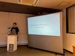

Alternative Architecture DOJO
https://aadojo.alterbooth.com/
オルターブースのクラウドネイティブ特化型ブログです。
フィード
Azure App ServiceのApp Configuration参照機能を試してみた
Alternative Architecture DOJO
こんにちは、小さい頃から娘が手や足をどこかにぶつけて「ここぶつけて痛い・・」と言ってくるたびに「ぶつけないように気をつけなさい」と言い続けていたら、最近はぶつけたときに「いたーい！気をつけます！」と言うようになって可愛いなと思いつつも気をつけろと言い過ぎたかなと反省している木村です。 先日、Azure App ServiceのApp Configuration参照機能がGAしましたので早速試してみました。 azure.microsoft.com なお、Azure portalの言語設定を英語にして画面キャプチャしていますので、日本語での表示は適宜読み替えてください。 App Configura…
1日前

JBUG福岡#18に弊社代表小島が登壇！DevOpsを続ける熱い思いを語りました。
Alternative Architecture DOJO
暑い日が続いておりますが、いかがお過ごしでしょうか？🍉 マーケティング部広報担当です！ 今回は、2024年7月26日（金）に開催された、『JBUG福岡#18 「具体的な運用事例から学ぶBacklog」』に弊社代表小島が登壇したので当日の様子をご紹介したいと思います！ JBUGとは？ "JBUG(ジェイバグ)"はBacklogのユーザーコミュニティ "Japan Backlog User"の略称です。 今回のテーマは、 「具体的な運用事例から学ぶBacklog」でした！33名も参加されていて大盛況でした。 jbug.connpass.com 今回の登壇テーマは『10年間DevOpsを続けてきてわ…
1日前
Postman Flowsを使ってDurable Functionsをテストする
Alternative Architecture DOJO
こんにちは！エンジニアのみっつーです。 今回はDurable Functionsの非同期HTTP APIパターンをテストする形で、Postman Flowsの使い方を見ていきたいと思います。 目次 Durable Functionsのセットアップ・デバッグ Postman Flowsの作成・実行 Flow実装で躓いた点 終わりに Durable Functionsのセットアップ・デバッグ まずはテスト対象のDurable Functionsを用意します。 Durable FunctionsはAzure Functionsの拡張機能であり、サーバーレスコンピューティング環境でステートフルなFun…
8日前

Azure OpenAI Service Dev Day 参加レポ
Alternative Architecture DOJO
こんにちは！オルターブースのいけだです！ 昨日、Azure OpenAI Service Dev Day に参加してきました！ azureai.connpass.com 今回はこちらの参加した内容を纏めて参ります！ 拝聴したセッション 私は午後から参加し、Breakout Trackのセッションを拝聴しました。 12:30 - 12:55 「RAGのサービスをリリースして1年が経ちました」 江頭貴史 (アイアクト) RAGシステムといえば、固定概念でチャットUIを想起してしまいますが、検索UIのほうが期待値を調整しやすいというのは目からウロコでした！ そもそも、RAGが最適とは限らない = 「…
14日前
GitHub DiscussionsのRSSを購読して投稿を素早く把握する
Alternative Architecture DOJO
こんにちは、MLBお兄さんこと松村です。 先日 MLB のオールスターゲームが開催されました。大谷選手や今永投手の活躍のさることながら、ルーキーで先発投手を務めたポール・スキーンズ投手は素晴らしかったです。 youtu.be GitHub Discussions とは、リポジトリやソフトウェアに関する Q&A や議論を行うフォーラムのような機能です。 .NET は GitHub で管理されるようになって久しいですが、今年になってからアナウンスの場所に GitHub Discussions を使用するようになりました。 github.com GitHub Discussions のスレッドの通知…
19日前
SORACOM Fluxを試してみた
Alternative Architecture DOJO
こんにちは、先日娘が7歳の誕生日の日にCoderDojoに参加して自己紹介(歳と名前と今日やることを言う)をしたあと「歳を言うときに間違って6歳って言いそうになった！」と笑っていて、少しずつ高度な可愛いことを言うようになったなと思った木村です。 2024/7/17に開催されたSORACOM Discovery 2024で発表された新サービス「SORACOM Flux」を早速試してみたので、皆様に紹介したいと思います。 SORACOM Fluxとは 公式ドキュメントによると、SORACOM FluxはローコードIoTアプリケーションビルダーとなっています。 ローコードというと弊社でもMicros…
22日前
1つのリポジトリで複数のDev Containersを利用する
Alternative Architecture DOJO
こんにちは、MLBお兄さんこと松村です。 もうすぐ MLB は前半戦を終了してオールスターに突入します。シカゴ・カブスの今永投手が1年目にして初選出されたのはホントに素晴らしいです！ www.mlb.com Dev Containers というは仕組みは devcontainer.json というファイルを定義して構成し、Visual Studio Code や GitHub Codespaces で利用することができます。 定義に沿った構成のコンテナーを Visual Studio Code で起動してすぐに開発を始めることができますし、GitHub リポジトリにコミットしておくことで Gi…
1ヶ月前
PHPカンファレンス福岡2024に参加して飛び込み登壇をしました！
Alternative Architecture DOJO
はじめに そろそろ梅雨になってきましたね！こんにちは、やしきんこと中屋敷です🦜 今日は先週参加したPHPカンファレンス福岡2024についてブログを書きました。 PHPカンファレンス福岡2024とは？ 九州のIT業界を盛り上げたい、九州や全国のPHPerと交流したいという思いが詰まって開催されているカンファレンスになります！ PHPにまつわるセッションはもちろん、PHP以外の技術領域のセッションやエンジニア職としての実務にまつわるセッションなど様々なセッションを聞くことが出来ます！ phpcon.fukuoka.jp また、スポンサーブースもあり、色んな企業の方とブースで交流できます🌟 とにかく…
1ヶ月前
Azure AI Studioのマネージド仮想ネットワーク設定を使ってプロジェクトをプライベート化する
Alternative Architecture DOJO
エンジニアのみっつーです！ 今回はAzure AI Studio上の特定のプロジェクトへのプライベートネットワークアクセスを構成する方法についてご紹介します。 Azure AI Studioにはマネージド仮想ネットワークの仕組みがあり、AIハブやコンピューティングリソースのパブリック/プライベート設定を容易に切り替えることが可能です。 learn.microsoft.com 今回はAIハブに対してプライベート化設定を行う手順とポイントを見ていきたいと思います。 今回実施する手順 踏み台用VM・Bastionの作成 AIハブの作成・プライベートネットワーク設定 動作確認 1. 踏み台用VM・Ba…
1ヶ月前
Azure Function Flex Consumptionを試してみた
Alternative Architecture DOJO
こんにちは、もうすぐ娘の誕生日なのですが、昨年の誕生日の朝に娘が飛び起きて「6歳になったー！」と叫びながら走ってきたので今年はどんな誕生日になるのか楽しみにしている木村です。 さて、今回は5月のMicrosoft Build2024でパブリックプレビューになった、Azure Funcitons Flex Consumpitonプランを試してみましたので、その感想をまとめたいと思います。 Flex Consumptionプランとは Flex Consumptionプランは、Azure Functionsの新しいプランです。これまでのConsumptionプランと同様に、使った分だけの課金がされる…
2ヶ月前
Azure OpenAI Serviceを使った生成AIアイデアソンワークショップを実施しました！
Alternative Architecture DOJO
6月だというのに30度超えな日々が続いていますね！ 梅雨の雲がないとこんなに暑いんですね～～。 さて、オルターブーではクラウドインテグレーションやGitHubを活用したソリューションを提供していますが、 実は生成AIを使ったプロダクトやソリューション開発にも力を入れています！ 今回はオルターブースの生成AI、とりわけMicrosoft社のAzure OpenAI Serviceを使ったアイデアソンについてご紹介します！ アイデアソンはグループに分かれていただき、各島で作業します なにをするアイデアソンなのか？ 生成AIを「自動化」「自分の代わり」として利用するシーンは多くあります。 それは果た…
2ヶ月前
【入社エントリ】オルターブースに入社して2か月経ちました
Alternative Architecture DOJO
初めまして。Alterbooth 新入社員の倉地です。入社してから、2か月ほど経ちました。ゲームエンジニアになりたかった自分が、なぜAlterboothに入りたいと思ったのかお話をしていきます。 初ハッカソンとAlterboothとの出会い 友人に誘われて、参加した初めてのハッカソンが 『SAGA × Azure Hackathon』でした。Alterboothのことを知ったのもそれが初めてです。当日の様子が、弊社ブログにも載っているのでぜひご覧ください。 aadojo.alterbooth.com Web系に興味がある友人にハッカソンに誘われ、ヌメロンと呼ばれる数字を当てるゲームを作成しまし…
2ヶ月前
オルターブース、GitHub Galaxyにブース出展しました
Alternative Architecture DOJO
2024年5月15日にギットハブ・ジャパン様が主催する「GitHub Galaxy Tokyo 2024」にブース出展いたしました！ 遅ればせながらブース出展についてブログにてご報告です。 GitHub Galaxyとは GitHub Galaxyは世界中各地で開催される、GitHubの最新トレンドをや利活用について紹介されるイベントです。 実は今回から初めてパートナー企業のブース出展があり、ありがたいことにその第1回目となる今回のイベントにてブースを出展させていただきました。 去年は参加者として aadojo.alterbooth.com 会場の雰囲気 GitHub Galaxy 2023に…
2ヶ月前
福岡クラウドUG Night 2ndで登壇してきました！
Alternative Architecture DOJO
こんにちは、エンジニアの馬場です！ 先週5月31日にオンラインとオフラインのハイブリッドで開催された「福岡クラウドUG Night 2nd」に登壇して来ましたので振り返ってみようと思います。 福岡クラウドUG Night 2ndとは？ 実はこのイベント、2回目ですが前回は7年前だったとか…。 満を持して開催されたこともあり、開催日の1か月以上前からすでにオフライン参加枠が埋まっていました。（すごい 場所は福岡ではおなじみエンジニアカフェでした。 イベントの詳細に関しては以下をご覧ください↓↓ cloudug.connpass.com YouTubeでも当日の動画が公開されていますので是非ご覧く…
2ヶ月前
Global Azure 2024 in Fukuoka の登壇にチャレンジ！
Alternative Architecture DOJO
はじめまして、オルターブースでエンジニアをやっています。ワクワク番長 こと 釘宮 です。 今年から新卒エンジニアとしてオルターブースに加わりました。 そんな私ですが、つい最近まで食あたりを患い、とても苦しい日常を送っていました。 お医者様曰く、この時期から食あたりは増えてくるそうなので、皆さんもお気を付けくださいませ。 今回は、先日福岡で「Global Azure 2024 in Fukuoka」が開催されたので紹介します。 Global Azure とは そもそもGlobal Azureとは何かについて紹介します。 Global Azureは、世界中のAzureユーザーグループが同時に勉強会…
2ヶ月前
新卒社員による Azure Fundamentals 合格までの道のり
Alternative Architecture DOJO
はじめに こんにちは！ 最近いろんな先輩社員さんから技術布教を受けて気になる部分をコツコツ触っていくことにワクワクしているやしきんこと中屋敷です。 私の出身大学は情報工学専攻でしたが、クラウド系の分野を勉強するカリキュラムはほぼありませんでした。 そのためクラウドに関する知見は、 Azure や AWS というクラウドサービスがあることと、オンプレミスとクラウドのおおまかな違いが分かるくらいでした。 また、クラウドをどれくらい利用しているかについては、ハッカソンなどで一部の Azure のサービスを使った程度になります。 今回、そんな私がオルターブースに入り、 Azure Fundamenta…
2ヶ月前
Azure Cosmos DB for NoSQLでベクトル検索が可能に！
Alternative Architecture DOJO
こんにちは！オルターブースのいけだです！ 早いものでもう６月ですね。 今年こそは妻の承認を貰って私の大好きな単車を買おうと息巻いてましたが、今年もまた見送りになりそうな雰囲気を感じている今日この頃です😭 さて、先日のMicrosoft Build で発表のあった通り、とうとうAzure Cosmos DB for NoSQLでベクトル検索が可能になりました！ これまでAzure Cosmos DBでは MongoDB vCoreでベクトル検索が可能ではありましたが、for NoSQL も対応となったことでよりRAG（Retrieval-Augmented Generation）構成などで使用す…
2ヶ月前
【入社エントリ】オルターブースに入社しました
Alternative Architecture DOJO
はじめに 初めまして！4月1日に入社しました、石川です！ 新人研修が終わったので、私がオルターブースに入社するまでの話を書いていきます。少しでもエンジニアに興味がある方に読んでいただけると幸いです。 自己紹介 北九州生まれ・北九州で育ち 九州工業大学 工学部 応用化学科卒 スイカ🍉とちいかわが大好き 大学時代のはなし 高校化学が好きだったので、そのまま迷わず近くの工業大学の応用化学科に入学しました。しかし、2020年入学だったので、コロナウイルスの関係で1年生から2年生までがほとんどオンライン授業で、そのときは友人たちとともに課題を乗り越える日々を過ごしていました。 大学3年生の秋、同学の情報…
2ヶ月前
Promptyでプロンプトを効率的に管理・実行する
Alternative Architecture DOJO
こんにちは！エンジニアのみっつーです。 今回はPromptyについて取り上げたいと思います。 Promptyとは、LLMプロンプトを管理するフォーマットであり、また、プレイグラウンドとして実行できるツールセットと併せてVisual Studio Code拡張機能として提供されているものです。 marketplace.visualstudio.com 例えば、拡張機能インストール後にExplorerタブ内を右クリックで「New Prompty」を選択すると、下記内容のファイルがbasic.promptyとして作成されます。 Semantic Kernelのskprompt.txtにちょっぴり似て…
2ヶ月前
オルターブースとの出会いから新卒社員になるまで
Alternative Architecture DOJO
GitHub Galaxy でブース出展を行っている様子 初めに 初めまして！今年度オルターブースに新卒で入社した中屋敷です。 今回は私の新卒エントリーとして、オルターブースに出会ったきっかけと入社までの経緯について書きました。 オルターブースとの出会い オルターブースを知ったのは2年前の佐賀で行われたAzureハッカソンになります。 hackz-community.doorkeeper.jp 私は大分の高専から編入で福岡の大学に入学しましたが、それまでハッカソンに出てみたいけど近場で開催していないのと、同級生もプロコンやロボコンに出ているもののハッカソン自体に出ている人がいなくてどうやって参…
3ヶ月前
GitHub Copilot Workspaceが利用可能になったのでゼロからアプリを作ってみた
Alternative Architecture DOJO
こんにちは、MLBお兄さんこと松村です。 昨年の MLB 全体ドラフト1位のポール・スキーンズ投手がメジャーデビューしました。予想通りの豪速球でした。 2024年4月29日についにテクニカルプレビューが開始となった GitHub Copilot Workspace ですが、ゴールデンウィーク中に私のアカウントでも利用可能となっていたため、試してみたことを書いていきます。 利用開始まで この記事を書いている時点では、 GitHub Copilot Workspace の利用には待機リスト (Waitlist) への登録が必要であり、その通過を待つ必要があります。 そのため GitHub Copi…
3ヶ月前
ArtilleryとGitHub Actionsを使った簡単負荷テスト
Alternative Architecture DOJO
こんにちは！オルターブースのいけだです！ 最近子供を連れてキッザニア東京に行ってきたのですが、1日中大忙し＆立ちっぱなしで、足が棒のようになりました。 子どもの可愛い姿を見れて大満足だったのですが、親はそれなりにキッザニアのシステムを予習した上で行く事を強くオススメします😅 さて！今回はArtilleryとGithub Actionsを使って簡単に負荷テストを実行してみようと思います！！ 負荷テストツールも多々あり、Apache JMeterやLocust等が有名でしょうか。 今回扱うArtilleryはyamlファイルでシナリオを作成し、負荷をかけることができるNode.js製のツールです。…
3ヶ月前
GitHub ActionsでEnvironmentごとのワークフロー履歴を確認できるようになりました
Alternative Architecture DOJO
こんにちは、MLBお兄さんこと松村です。 先日のゴールデンウィーク休暇では、GitHub Actions や Azure DNS と戯れて遊んでいました。 2024年4月25日に GitHub Actions のアップデートが公開されていました。 内容としては、 Environment (環境) ごとのワークフロー履歴を確認できるダッシュボードが一般提供されるようになったものです。 早速使ってみましたので使用感を書いてみます。 github.blog Environment とは GitHub Actions の Environment とは、簡単に言えば「デプロイ先の環境」を表すための構成で…
3ヶ月前
Postman API Night Fukuoka 2024 Spring に登壇しました！
Alternative Architecture DOJO
こんにちは！ オルターブースでアプリケーションエンジニアをしているはっしーです！ GWは、熊本県阿蘇小国町の方へ行き、温泉を満喫しました。 その際、地表から噴き出す温泉の蒸気を使用した地獄蒸しというものを堪能しました。 温泉の蒸気で作るゆで卵は格別で、こんなに美味しいものだったのかと感動しました。 余韻で通常のゆで卵も美味しく感じるようになったので、飽きるまで食べ続けたいと思います。 さて、先日福岡で「Postman API Night Fukuoka 2024 Spring」が開催されたので紹介します。 postman.connpass.com Postman API Night Fukuo…
3ヶ月前
Global Azure 2024(東京会場)に登壇しました
Alternative Architecture DOJO
こんにちは、先日小学校に入学した娘が「パパ、どうして人間は存在しているの？」と聞いてきたので末はニーチェか釈尊かと驚いた木村です。なお、物理学的なことと哲学的なことと宗教的なことについて知りうる限りの知識を総動員して回答しましたが、ちゃんと伝わったかは不明です。 2024/4/20に開催されたGlobal Azure 2024(東京会場)にショートセッションで登壇しましたので、その報告をしたいと思います！ jazug.connpass.com なお、当日は弊社でGlobal Azure 2024 in Fukuokaが開催されていたのですが、私はこの開催を知る前に登壇を決めていたため、福岡会場…
3ヶ月前
Global Azure 2024 in Fukuokaに登壇しました！
Alternative Architecture DOJO
エンジニアのみっつーです！ 先週末に、Global Azure 2024 in Fukuokaに登壇させていただきました。 jazug.connpass.com 登壇内容紹介 私が今回お題にしたのはKernel MemoryというOSSです。 Kernel Memoryは、様々なデータソースからインデックス作成することに特化したマルチモーダルAIサービスで、例えば話題のAzure OpenAI Serviceを使ってこれまた話題のRAGアーキテクチャ実現のために様々なデータソースとの繋ぎ込みを行ってくれるようなサービスです。 github.com ざっくりポイントは下記の通りです。 Kerne…
4ヶ月前
Global Azure 2024 in Fukuokaを開催しました！
Alternative Architecture DOJO
こんにちは、MLBお兄さんこと松村です。 我がニューヨーク・ヤンキースは、開幕20戦で14勝6敗で地区首位という順調なスタートを切っています。 2024年4月20日に当社オルターブースの天神サテライトにて、「Global Azure 2024 in Fukuoka」というイベントを開催しました。 jazug.connpass.com Global Azure とは、Microsoft Azure をテーマとした世界規模のコミュニティイベントです。 今年は4月18日から20日までの期間で、世界中の様々な場所でイベントが開催されました。 globalazure.net blog.globalazu…
4ヶ月前
Teamsのイマーシブスペースを使ってみた！
Alternative Architecture DOJO
こんにちは！オルターブース クラウドソリューション部 エンジニアのはっしーです。 今回は、Teamsのイマーシブスペース機能を使ってみたので紹介します。 イマーシブスペース機能とは？ Teamsから接続できる3D空間です。 イマーシブスペース 2Dの会議と比べてより没入感の高い体験を得ることができます。 また、Microsoft Meshを使用しており、音の方向性や距離などの空間認識が備わっているため、 同じ空間で複数のグループに分かれて会話をすることができます。 support.microsoft.com 2024年4月4日現在使用できる環境は以下のようになっています。 Teams のイマー…
4ヶ月前
Azure Cosmos DBデザインパターン解説：Materialized Viewパターン
Alternative Architecture DOJO
こんにちは、MLBお兄さんこと松村です。 シカゴ・カブスの今永昇太投手は、ここまで3試合の先発登板でいまだに防御率が 0.00 という、素晴らしい成績を残しています。 今回は Azure Cosmos DB for NoSQL のデザインパターン解説記事の第6弾です。 前回は「イベントソーシング (Event sourcing) パターン」を解説しました。 aadojo.alterbooth.com 今回は「マテリアライズド・ビュー (Materialized View) パターン」について解説をします。 このデザインパターンについては、Cosmos DB の GitHub リポジトリやブログ…
4ヶ月前
Teams Premiumのインテリジェンス会議機能（AI議事録）を使ってみた
Alternative Architecture DOJO
こんにちは！クラウドソリューション部エンジニアのはっしーです！ 今回は、Teams Premiumのインテリジェンス会議機能（AI議事録）を使ってみたので、紹介とレビューをしていきたいと思います！ Teams Premiumとは Teamsの上位機能を使えるようになるアドオンライセンスです。 ライセンスを購入すると、管理者とエンド ユーザーは、Microsoft 365 サブスクリプションと共に Teams の上位機能にアクセスできるようになります。 どのような上位機能があるかは以下を参考にしてください。 www.microsoft.com 動機 Teams Premiumを試した理由は、タイ…
4ヶ月前